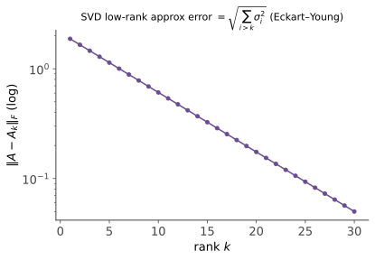

数值线代 I · SVD、QR 与后向稳定性
对标：Trefethen & Bau NLA Lectures 1–19 ｜ 前置：本科高代 V–VI、数值 I–II 研究生数值线代的纲领（Trefethen 的开篇宣言）：一切算法围绕矩阵分解组织，一切误差分析围绕"后向稳定 + 条件数"组织。本页立起这两根柱子：SVD 作为"最诚实的分解"、Householder QR 作为稳定算法的典范、以及后向误差分析的正式语言。
1. SVD：数值世界的中心分解

\(A = U\Sigma V^\top\)（本科高代 VI 已证存在）。数值视角下它的三重身份：
- 几何真相：任何矩阵 = 旋转 × 拉伸 × 旋转——条件数 \(\kappa_2 = \sigma_1/\sigma_n\)（数值 I 的定义在此显出几何脸：最大与最小拉伸比）；
- 最佳低秩逼近（Eckart–Young）【证明】：\(\min_{\mathrm{rank}(B)\leq k}\|A - B\|_2 = \sigma_{k+1}\)，达于截断 SVD \(A_k\)。证：上界显然（\(\|A - A_k\| = \sigma_{k+1}\)）；下界——任取秩 \(\leq k\) 的 \(B\)，\(\ker B\) 维数 \(\geq n - k\)，与 \(V\) 的前 \(k+1\) 列张成空间必相交于非零 \(w\)：\(\|(A - B)w\| = \|Aw\| \geq \sigma_{k+1}\|w\|\)。\(\blacksquare\)（PCA/压缩/推荐系统低秩近似的最优性执照——高代 VI 预告的兑付。）
- 数值秩：浮点世界没有"恰好为零"的奇异值——秩的实用定义是 \(\#\{\sigma_i > \mathrm{tol}\}\)：秩是个带公差的工程量（数值 I 哲学的深化）。
2. 后向稳定性：误差分析的正确提问
定义 算法 \(\tilde f\) 计算 \(f\) 是后向稳定：对每个输入 \(x\)，存在小扰动 \(\|\Delta x\| = O(\varepsilon_{\text{mach}})\|x\|\) 使
——"给出的是附近某个问题的精确答案"。前向误差由此分解（数值 I 的公式获得正式地位）：
读法（分工宣言）：算法只对后向误差负责（把它压到机器精度），条件数是问题自带的病情——"稳定的算法 + 病态的问题 = 精确解错题"是无法避免的宿命，但责任在问题不在算法。此语言下的判决先例：内积、Householder QR、回代求解三角系统皆后向稳定【引用 Higham】；经典 Gram–Schmidt 不稳定（正交性损失 \(\sim\kappa^2\varepsilon\)；改良版 MGS 半救、Householder 全救——见下）；正规方程法 \(A^\top Ax = A^\top b\) 把条件数平方（\(\kappa(A^\top A) = \kappa(A)^2\)）——最小二乘的第一戒律。
3. Householder QR：稳定算法的典范
Householder 反射：\(H = I - 2vv^\top/(v^\top v)\)——关于超平面的镜像（正交对称阵）。选 \(v = x \pm \|x\|e_1\) 使 \(Hx = \mp\|x\|e_1\)：一次反射清零一整列的下方（符号取与 \(x_1\) 同号者避免相消——数值 I 的病例在细节处站岗）。逐列反射 \(H_{n-1}\cdots H_1 A = R\) ⇒ \(A = QR\)。
为什么稳定【机理级】：全程只乘正交矩阵——正交变换保 2-范数（\(\kappa_2(Q) = 1\)），误差被搬运而不被放大；对比消元法靠选主元"祈祷"增长因子不爆。"能用正交变换就用正交变换"是数值线代的第一美德（Givens 旋转是稀疏场景的替补【引用】）。
最小二乘的标准作业：\(\min\|Ax - b\|_2\) ⇒ QR 后解 \(Rx = Q^\top b\)——后向稳定且条件数不平方；病态到 \(\kappa\) 巨大时上 SVD（截断小奇异值 = 正则化：与岭回归殊途同归【引用】，统计 V/优化线的老朋友以数值身份三会）。
4. 练习与要点
例 1（Eckart–Young 实感） 秩 50 的 \(1000\times1000\) 图像矩阵：存 SVD 前 50 项 = 原存储的 10%，误差 \(\sigma_{51}\)——"图像压缩几行代码"背后的最优性定理；同时是"embedding 矩阵低秩近似"的定价公式。
例 2（正规方程 vs QR 数值实验设计） 取 \(\kappa(A) = 10^6\) 的病态最小二乘：正规方程有效精度 \(\sim 10^{-16}\times10^{12} = 10^{-4}\)，QR \(\sim 10^{-10}\)——六位数字的差距来自"条件数是否被平方"一个决定。sklearn 的 lstsq 走 SVD/QR 而非正规方程，原因在此。
例 3（后向语言的翻译练习） "解 \(Ax = b\) 得到的 \(\tilde x\) 残差 \(\|A\tilde x - b\|\) 很小"——这是前向还是后向陈述？答：后向（\(\tilde x\) 精确解了 \(b + r\) 的问题）；残差小 ≠ 误差小（差 \(\kappa\) 倍）——"看残差判断解好坏"只在良态问题上合法：把这句话讲清楚，本页的语言就掌握了。\(\blacksquare\)
下一页：特征值怎么算——幂法的理论、QR 迭代的机理与收敛，以及"为什么特征值必须迭代"。